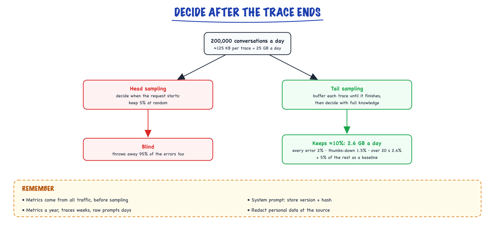
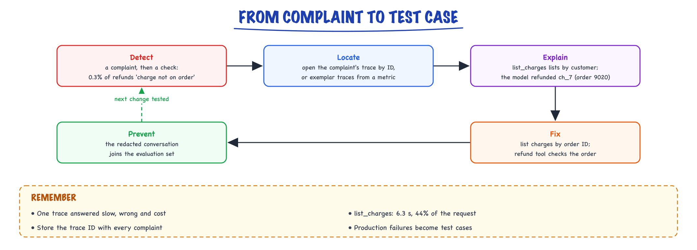

Observability // Production & evals
Seeing inside a twelve-step agent: traces, spans, metrics, tools, and what to alert on.
01 — At a glance
Trace, evaluate, and debug LLM applications: LangSmith tracing patterns, Langfuse, OpenTelemetry GenAI spans, token and cost tracking, golden-set eval CI, online feedback loops, and production dashboards for RAG and agents.

Observability stack: SDK wraps LLM / retriever / tool calls → trace spans (latency, tokens, I/O) → dashboard + alerts → Evaluating LLM features regression gate on every deploy.
02 — New words
| Word | Meaning |
|---|---|
| Trace | The record of one request's whole journey through the system, made of spans that share one trace ID. |
| Span | One timed operation inside a trace (a model call, a tool call, a retrieval) with a start, an end, a parent and attributes. |
| Attributes | Key-value facts attached to a span: model name, token counts, prompt version, tool arguments, document IDs. |
| Context propagation | Passing the trace ID and current span ID along with a request, across threads, queues and services, so all spans join one trace. |
| OpenTelemetry (OTel) | The vendor-neutral standard and SDKs for producing traces, metrics and logs. Its GenAI conventions name LLM attributes (gen_ai.*). |
| Metric | A number aggregated over many requests: a counter, a gauge or a histogram (for latency percentiles). |
| Cardinality | How many distinct values a metric label can take. Labels like user ID explode it and the metrics bill with it. |
| Head / tail sampling | Deciding whether to keep a trace when it starts (cheap, blind) or after it ends (can keep every error and slow trace). |
| Online evaluation | Scoring a sample of live traffic for quality (format checks, groundedness, an LLM judge) instead of only offline test sets. |
| SLO and error budget | A target such as "99.5% of conversations succeed in 30 days"; the 0.5% allowed to fail is the budget. |
| Burn rate | How fast the error budget is being used: observed failure rate ÷ allowed failure rate. 1.0 means exactly on budget. |
| Exemplar | A concrete trace linked from a metric, so you can jump from "p95 rose" to a request that shows why. |
| Trajectory eval | Checking the agent steps/tool-use were sane, not just the answer. |
The lesson
03 — The question
A web service fails loudly: an exception, a 500, a timeout. An LLM application mostly fails quietly. The request returns 200, the answer is fluent, and it is wrong: the retriever fetched the wrong document, the model picked the wrong tool argument, a prompt change made answers longer and costs higher. Observability is how you see these failures, explain them from evidence, and catch them early next time.
The questions interviewers ask:
- What would you record for every LLM call and agent step, and why each field?
- An agent occasionally takes 15 seconds and sometimes does the wrong thing. How do you find out why?
- What do you alert on, given that most quality failures do not raise errors?
- How do you afford to keep this data, and what about the user data inside the prompts?
Running example. A customer-support agent handles about 200,000 conversations a day. One customer writes: "I was charged twice for order 8812, please refund the duplicate." The agent replies that it has refunded the duplicate, but the customer complains a day later: the refund went to a different order, and the reply took 14 seconds. With no observability you have a complaint and a log line saying 200 OK. We will instrument this request, read its trace, turn traces into metrics and alerts, and decide what to keep.
04 — Step 1: why ordinary monitoring is not enough
Traditional application monitoring watches request rate, error rate and latency, the "RED" metrics. They still matter for LLM applications, and they catch outages, but they miss what makes these systems different:
- Correctness is not visible in status codes. The wrong refund succeeded technically. Quality must be measured explicitly.
- One request is many steps. Our agent made four model calls and six tool or guardrail calls. A request-level latency number cannot say which step was slow or which decision was wrong.
- Cost varies per request. One conversation uses 3,000 tokens, another 300,000 after a tool loop. Spend must be measured per request, per feature and per tenant, not estimated.
- Behaviour depends on versions you do not deploy as code: the prompt, the model snapshot behind an API name, the retrieval index, decoding settings. If these are not recorded, "did Tuesday's change cause this?" cannot be answered.
- The same input can produce different outputs. You cannot always reproduce a failure by rerunning it, so you must capture enough of the original to inspect it.
The answer is tracing first, metrics derived from traces second, and quality signals added on top.
05 — Step 2: traces and spans, the data model
A span is a record of one operation: a name, a start and end time, a status, a parent span ID, and attributes. A trace is the tree of spans that share a trace ID. Instrumenting our agent produces this trace (11 spans):
POST /chat 14.30 s tenant=acme ├─ execute_tool input_guardrail 0.12 s ├─ execute_tool retrieve_policy 0.15 s doc_ids=refund-policy#3 ├─ chat step 1 1.90 s in 6,200 out 120 → call get_order ├─ execute_tool get_order 0.18 s order_id=8812 ├─ chat step 2 2.10 s in 6,900 out 90 → call list_charges ├─ execute_tool list_charges 6.30 s attempts=3 charges=ch_1:8812, ch_7:9020 ├─ chat step 3 1.60 s in 7,600 out 80 → call refund ├─ execute_tool refund 0.40 s charge_id=ch_7 ├─ chat step 4 1.40 s in 7,900 out 60 → final answer └─ execute_tool output_guardrail 0.10 s
Read it the way you would in an incident:
- Where did the time go?
list_chargestook 6.3 s, 44% of the request, and itsattempts=3attribute says why: it was retried twice (the attempt events would show two rate-limit responses). The four model calls together took 7.0 s, the other 49%. The fix for "slow" is the billing API's rate limit, not the model. - Why was the answer wrong?
list_chargesreturned charges for two orders (8812 and 9020) because it lists by customer, not by order. The model refundedch_7, which belongs to order 9020. The model's choice is visible in step 3's output; the root cause is a tool whose result made the wrong choice easy. - What did it cost? 28,600 input and 350 output tokens: about $0.091 at illustrative prices of $3 and $15 per million. Note that input grew every step, because each call resends the whole conversation.
None of this was available from the request log. All of it was available from one trace, in a minute. That is the case for tracing.
06 — Step 3: what to put on each span
Every attribute should answer a question you will ask during an incident. A practical set, by span type:
| Span | Attributes | Question it answers |
|---|---|---|
| Model call | model and snapshot, provider, temperature and max tokens, input/output/cached token counts, finish reason, TTFT, prompt template version | Which model and prompt produced this? Was it cut off? What did it cost? |
| Model call (content) | the messages sent and received, or a reference to them in separate storage | What exactly did the model see and say? |
| Tool call | tool name, arguments, result summary, status, attempts | What did the agent decide to do, and what came back? |
| Retrieval | query, index version, returned document IDs and scores | Was the right evidence available to the model? |
| Root | tenant, feature, user or session ID (hashed if needed), app version, outcome | Whose request was it, and did it succeed? |
Use the OpenTelemetry GenAI semantic conventions for names where they exist (gen_ai.request.model, gen_ai.usage.input_tokens, gen_ai.usage.output_tokens, gen_ai.tool.name). The conventions are still marked experimental and some names have changed between releases, but following them means any OTel-compatible backend (open-source or commercial LLM tracing tools, general APM products) can read your data, and you are not locked into one vendor's SDK.
The prompt version attribute deserves emphasis. Prompts change more often than code and change behaviour more. Tagging every model span with the template version lets you compare any metric before and after a prompt change, which is the most common question after "something got worse".
07 — Step 4: propagating context across boundaries
Spans join into one trace only if every component knows the current trace and parent span. Inside one process, SDKs keep this in a context variable, so a span started inside another automatically becomes its child. Across processes it must travel with the request. The W3C traceparent HTTP header carries it in a fixed format: version, 32-hex-digit trace ID, 16-hex-digit parent span ID, and flags (whether this trace is being sampled):
traceparent: 00-7d3e1c0a9b4f42e8a1c5d6e7f8091a2b-3c4d5e6f7a8b9c0d-01
Where propagation usually breaks in LLM systems:
- Queues and background jobs. An agent step handed to a task queue loses the context unless you put the trace context in the message and restore it in the worker.
- Thread pools and async tasks started without copying the context.
- Calls to your own tool services made with a plain HTTP client that does not inject the header.
- Streaming responses, where the span must stay open until the last token, not end when the first chunk is sent.
A broken link shows up as a trace that stops halfway and a second, orphaned trace that starts with no parent. Checking for orphans is a quick health test of your instrumentation.
08 — Step 5: from spans to metrics
Traces explain one request. Metrics describe all of them, cheaply enough to keep for a year and query in a second. Derive them from the same instrumentation, before any sampling, so they count every request:
- Traffic, errors, duration per route and per step: request rate, error rate, latency histograms (p50, p95, p99), TTFT and time per output token for model calls.
- Tokens and cost: input, cached and output tokens and dollars, per model, feature and tenant. Cost per successful task is the business number (see Cost & latency).
- Agent shape: steps per task, tool-call counts and tool error rates, how often the step limit is hit. A rise in steps per task often precedes a cost incident by days.
- Quality: the signals in Step 6.
Two rules prevent the classic mistakes. First, percentiles cannot be averaged: the p95 of the whole fleet is not the mean of each server's p95, so record histograms and compute percentiles from the combined buckets. Second, keep label cardinality low. Labelling a metric by tenant (hundreds of values) is fine; by user ID or trace ID (millions) creates millions of time series. High-cardinality detail belongs in traces, linked from metrics through exemplars.
09 — Step 6: measuring quality in production
The wrong refund raised no error. Quality failures have to be detected by signals you design, in three tiers:
- Explicit feedback: thumbs up and down, ratings, complaint tickets. High value, but sparse (often a few percent of conversations) and biased toward angry users. Store the trace ID with every piece of feedback, so each complaint leads straight to its trace.
- Implicit signals: the user rephrases the same question, abandons mid-conversation, asks for a human, or reverses the agent's action. These are available for every conversation and correlate with failure; define a few and chart them.
- Automated checks on live traffic (online evaluation). Cheap deterministic checks run on every request: output parses against its schema, cited document IDs exist, the refund amount matches a charge on the order. Expensive checks run on a sample: an LLM judge scores groundedness or policy compliance on, say, 2% of conversations.
Sampling is a statistics question. Judging 2% of 200,000 daily conversations is 4,000 judgements a day; at an illustrative $0.01 each that is $40 a day. With 4,000 samples and a 95% pass rate, the standard error is \(\sqrt{0.95 \times 0.05 / 4{,}000} \approx 0.34\) percentage points, so a drop to 92% is about nine standard errors (about six when you compare two days, each with its own noise): visible within one day. Judges have their own errors, so calibrate them against human labels before trusting their trend (see Evaluating LLM features).
In the running example, a cheap deterministic check would have caught the bug on the first occurrence: "the refunded charge belongs to the order in the conversation" is a single comparison of two span attributes.
10 — Step 7: what to keep, and for how long
Full traces are large because they contain prompts. Our trace has four model calls with about 7,000 tokens of input each; stored as text with outputs, tool results and metadata, call it 125 KB per conversation. At 200,000 conversations a day that is 25 GB a day, 750 GB a month, before indexing and replication. Keeping everything is possible but rarely sensible.
Head sampling decides at the start of a request (keep 5% at random). It is cheap but blind: it throws away 95% of errors too. Tail sampling buffers each trace until it finishes, then decides with full knowledge: keep every trace that errored, got negative feedback, failed a check or ran unusually long, plus a small random share of normal ones as a baseline. In a simulated day with 2% errors, 1.5% thumbs-down and 2.4% of conversations over 20 seconds, keeping all of those plus 5% of the rest retains about 10% of traces (2.6 GB a day) and every single error.

Head sampling decides blind at the start and drops most errors; tail sampling waits for each trace to finish, keeps every error, thumbs-down and slow trace plus 5% of the rest, about 10% of traces in all.
Two further savings: store the large repeated parts once (the 6,000-token system prompt is the same in every call, so store its version and hash, not its text), and keep different data for different periods (metrics for a year, sampled traces for a few weeks, raw prompts for days unless needed for evaluation sets).
11 — Step 8: prompts are user data
The trace of our refund conversation contains a customer's name, order numbers, charge IDs and perhaps a card's last four digits. Storing traces means operating a store of personal data, with obligations that follow:
- Redact at the source, before data leaves the application: mask emails, phone numbers, card and account numbers with pattern matchers or a PII detector. Redacting later, in the backend, means the raw data already crossed the network and possibly a vendor's boundary.
- Restrict access: debugging access to full prompts should be narrower than access to dashboards.
- Support deletion: if a user asks to be forgotten, you must be able to find and delete their traces, which requires a (hashed) user identifier on the root span.
- Never record secrets: API keys and tokens in tool arguments or headers must be stripped by the instrumentation.
These constraints shape the design: the more you redact, the harder some bugs are to diagnose. A common compromise is redacted traces by default and short-lived, access-controlled raw traces for the sampled failures.
12 — Step 9: alerting on what users feel
Alert on symptoms users experience, not on every internal anomaly, and make each alert actionable. A service-level objective defines the symptom: "99.5% of conversations succeed over 30 days", where success means no error, no timeout, valid output, and no failed deterministic check. The 0.5% that may fail is the error budget.
A fixed error-rate threshold either pages too often or too late. Burn-rate alerts ask how fast the budget is being spent:
\[ \text{burn rate} = \frac{\text{observed failure rate}}{1 - \text{SLO}} \]A 30-day budget lasts 720 hours. A burn rate of 14.4 sustained for one hour spends \(14.4 / 720 = 2\%\) of the month's budget in that hour, a common threshold for paging someone. A burn rate of 6 over six hours spends 5%, a common threshold for a ticket. With a 99.5% SLO, those correspond to failure rates of 7.2% and 3%. A ten-minute spike to 20% failures averages \(20\% \times 10/60 \approx 3.3\%\) over the hour, a burn rate of 6.7, and pages nobody; a sustained 7.35% (burn rate 14.7) pages within the hour.
Alongside the SLO, LLM systems need a few specific alerts:
- Spend per tenant or feature above a multiple of its recent baseline: catches loops and prompt bloat.
- Steps per task or step-limit hits rising: catches agents stuck in loops.
- Quality signals (judge pass rate, rephrase rate) dropping beyond their noise band: catches silent regressions, such as a provider silently updating a model behind the same name.
13 — Step 10: the debugging loop
Put the pieces together and observability becomes a loop, not a dashboard:
- Detect: an alert, a metric trend or a complaint. Here: a complaint, then a deterministic check added in Step 6 that flags 0.3% of refunds as "charge not on the order".
- Locate: from the metric, open exemplar traces; from the complaint, open its trace by ID.
- Explain: read the spans. The list tool returns charges for every order; the model chose by amount.
- Fix: change the tool to filter by order ID and return the order with each charge; add a check in the refund tool that the charge matches the order in context.
- Prevent: add this conversation, redacted, to the evaluation set, so the next prompt or model change is tested against it (Evaluating LLM features).

The wrong-refund bug goes round the loop once: a complaint and an online check detect it, the trace locates and explains it, the tool is fixed, and the conversation joins the evaluation set.
The last step is what makes observability pay for itself: production failures become test cases, and the test set comes to reflect what actually goes wrong rather than what the team imagined.
14 — In code: tracing, sampling and burn rate
The running example instrumented with the OpenTelemetry Python SDK (runs as written with opentelemetry-sdk installed). It uses an in-memory exporter and a simulated clock so it is instant and deterministic; in production you would export over OTLP to a collector and let real time pass.
from opentelemetry import trace from opentelemetry.sdk.trace import TracerProvider from opentelemetry.sdk.trace.export import SimpleSpanProcessor from opentelemetry.sdk.trace.export.in_memory_span_exporter import InMemorySpanExporter exporter = InMemorySpanExporter() # in production: an OTLP exporter to a collector provider = TracerProvider() provider.add_span_processor(SimpleSpanProcessor(exporter)) tracer = provider.get_tracer("refund-agent") clock = 1_700_000_000 * 10**9 # simulated clock in ns, so the demo is instant def span(name, secs, parent_ctx, **attrs): """Record one finished span of `secs` seconds starting at the simulated clock.""" global clock s = tracer.start_span(name, context=parent_ctx, start_time=clock, attributes=attrs) clock += int(secs * 1e9) s.end(end_time=clock) root = tracer.start_span("POST /chat", start_time=clock, attributes={"app.tenant": "acme"}) ctx = trace.set_span_in_context(root) # children point at the root as parent llm = lambda step, tin, tout, secs: span( f"chat step {step}", secs, ctx, **{"gen_ai.operation.name": "chat", "gen_ai.request.model": "large-model-v3", "gen_ai.usage.input_tokens": tin, "gen_ai.usage.output_tokens": tout, "app.prompt_version": "refund-v14"}) tool = lambda name, secs, **a: span(f"execute_tool {name}", secs, ctx, **{"gen_ai.tool.name": name, **{f"app.{k}": v for k, v in a.items()}}) tool("input_guardrail", 0.12) tool("retrieve_policy", 0.15, doc_ids="refund-policy#3") llm(1, 6200, 120, 1.9); tool("get_order", 0.18, order_id="8812") llm(2, 6900, 90, 2.1); tool("list_charges", 6.3, attempts=3, charges="ch_1:8812,ch_7:9020") llm(3, 7600, 80, 1.6); tool("refund", 0.40, charge_id="ch_7") # a charge from the wrong order llm(4, 7900, 60, 1.4); tool("output_guardrail", 0.10) root.end(end_time=clock + int(0.05e9)) spans = exporter.get_finished_spans() top = next(s for s in spans if s.parent is None) dur = lambda s: (s.end_time - s.start_time) / 1e9 tin = sum(s.attributes.get("gen_ai.usage.input_tokens", 0) for s in spans) tout = sum(s.attributes.get("gen_ai.usage.output_tokens", 0) for s in spans) print(f"{len(spans)} spans, {dur(top):.2f} s, {tin} in / {tout} out tokens, ${(tin*3 + tout*15)/1e6:.3f}") for s in sorted((s for s in spans if s is not top), key=lambda s: s.start_time): print(f" {s.name:30s} {dur(s):5.2f} s {dur(s)/dur(top):6.1%} {s.attributes.get('app.charge_id', '')}")
It prints 11 spans, 14.30 s, 28,600 input and 350 output tokens, $0.091, and a per-span breakdown in which list_charges is 44.1% of the time and the refund span shows ch_7.
Tail sampling over a simulated day, and the storage it saves:
import random def keep(trace, base_rate=0.05, rng=random.Random(7)): """Tail sampling: decide after the trace finishes, so the interesting ones are always kept.""" if trace["error"] or trace["thumbs_down"] or trace["latency_s"] > 20: return True return rng.random() < base_rate rng = random.Random(1) day = [{"error": rng.random() < 0.02, "thumbs_down": rng.random() < 0.015, "latency_s": rng.lognormvariate(2.0, 0.5)} for _ in range(200_000)] kept = [t for t in day if keep(t)] KB = 125 # stored size of one full trace, in KB print(f"slow (>20 s): {sum(t['latency_s'] > 20 for t in day)/len(day):.1%}") print(f"kept {len(kept)/len(day):.1%} of traces: {len(kept)*KB/1e6:.1f} GB/day " f"instead of {len(day)*KB/1e6:.0f} GB/day") print(f"errors kept: {sum(t['error'] for t in kept)} of {sum(t['error'] for t in day)}")
And the burn-rate rule from Step 9:
def burn_rate(bad, total, slo=0.995): """How fast the error budget is being spent: 1.0 means exactly on budget.""" return (bad / total) / (1 - slo) # 30-day budget = 720 hours. Spending 2% of it in 1 hour is a burn rate of 0.02 * 720 = 14.4; # spending 5% of it in 6 hours is 0.05 * 720 / 6 = 6. RULES = {"1h": (14.4, "PAGE"), "6h": (6.0, "TICKET")} for window, bad, total in [("1h", 610, 8_300), ("6h", 1_550, 50_000), ("6h", 300, 50_000)]: br = burn_rate(bad, total) limit, action = RULES[window] print(f"last {window}: error rate {bad/total:.2%}, burn rate {br:4.1f} -> {action if br >= limit else 'ok'}")
Output: a 7.35% failure rate in the last hour is a burn rate of 14.7 and pages; 3.10% over six hours (6.2) opens a ticket; 0.60% (1.2) is within normal variation.
Quick reference
15 — What & Why
LLM apps fail silently: wrong retrieval, prompt drift, tool loops, partial answers that look fine. Traditional APM misses prompt inputs, chunk IDs, and token costs. LLM observability = traces (what happened step-by-step), evals (is quality still good), metrics (cost/latency per tenant). Required before any prod The RAG pipeline or LangGraph agent launch.
Functional requirements
- Trace tree per user request: embed, retrieve, rerank, LLM, tools
- Capture inputs/outputs with PII redaction policy
- Aggregate token usage and $ cost per model/feature/tenant
- Run golden-set eval on CI deploy; block if score drops >5%
- Collect online feedback (thumbs down) into review queue
Non-functional requirements
- Overhead: <5% latency added by tracing SDK
- Retention: 30–90 days traces; PII scrubbed at ingest
- Scale: sample success traces at high QPS; 100% errors
- Privacy: GDPR delete by user_id; no secrets in spans
16 — Core Concepts
| Term | Definition | Gotcha |
|---|---|---|
| Trace | Tree of spans for one end-user request | Must include retrieval + LLM + tools |
| Span | Single operation with start/end, I/O, metadata | Tag prompt_version, model, tenant |
| Run (LangSmith) | One invocation logged to LangSmith | Auto for LangChain/LangGraph with env vars |
| Golden set | Labeled Q&A for regression eval | Update quarterly from prod failures |
| LLM-as-judge | Model grades answer vs reference | Fast but biased; calibrate with humans |
| Feedback loop | Thumbs down → dataset → eval / fine-tune | Close loop or quality stagnates |
| Sample rate | Fraction of success traces stored | 100% errors; 5–20% success at scale |
17 — API / Interface Surface
# LangSmith — auto-trace LangChain / LangGraph
import os
os.environ["LANGCHAIN_TRACING_V2"] = "true"
os.environ["LANGCHAIN_API_KEY"] = "lsv2_..."
os.environ["LANGCHAIN_PROJECT"] = "rag-prod"
# Manual run logging
from langsmith import traceable
@traceable(name="rag_pipeline", metadata={"tenant": "acme"})
def answer(query: str) -> str:
docs = retrieve(query) # child span auto
return generate(query, docs)
# Langfuse decorator
from langfuse.decorators import observe, langfuse_context
@observe()
def rag_pipeline(query: str):
langfuse_context.update_current_trace(user_id="hash-123")
...
# OpenTelemetry custom span
with tracer.start_as_current_span("rerank") as span:
span.set_attribute("gen_ai.request.model", "bge-reranker")
span.set_attribute("retrieve.k", 50)
results = reranker.rank(query, docs)18 — When to Use / When NOT
| Case | Obs stack? | Minimum |
|---|---|---|
| Prod RAG or agent | Required | Langfuse or LangSmith + golden CI |
| Staging / load test | Yes | Trace + cost dashboard |
| One-off notebook | Optional | Print debugging OK |
| Batch offline eval only | Eval harness | No live tracing needed |
19 — Architecture
App (FastAPI / LC / LangGraph)
|
v
+-------------+
| OTel / SDK | LangSmith / Langfuse client
+------+------+
|
v
+-------------+
| Collector | batch export
+------+------+
|
+-----+-----+
v v
+---------+ +---------+
| Storage | | UI | traces, prompts, datasets
| CH/PG | |Dashboard|
+---------+ +---------+
|
v
+---------+
| Eval CI | golden set on deploy
+---------+20 — Tracing & LangSmith Patterns

Trace waterfall: root span RAG request 850 ms → embed 15 ms → vector DB 25 ms → rerank 65 ms → LLM generate 720 ms (prompt=2400, completion=180 tokens).
LangSmith patterns for RAG
- Project per env:
rag-dev,rag-staging,rag-prod - Metadata tags:
tenant_id,prompt_version,embed_model,chunk_ids - Datasets: upload golden Q&A; run evaluators on every PR
- Evaluators: correctness (LLM judge), recall@k (custom), latency threshold
- LangGraph: each node name appears as span — map to graph diagram
# LangSmith eval on dataset
from langsmith.evaluation import evaluate
def correctness(run, example):
return llm_judge(run.outputs["answer"], example.outputs["reference"])
evaluate(
answer, # your pipeline
data="golden-rag-v3",
evaluators=[correctness],
experiment_prefix="deploy-2026-05-30",
)
LangSmith is deepest integrated with LangChain/LangGraph. Langfuse offers OSS self-host for cost-sensitive scale. Both support OpenTelemetry export.
21 — Cost Tracking

Dashboard panels: tokens in/out per model, daily cost USD, p99 latency trend, eval score over deploys (drop on bad deploy, recovery after rollback).
# Per-span cost attribution
prompt_tokens = usage.prompt_tokens
completion_tokens = usage.completion_tokens
cost_usd = (
prompt_tokens * PRICE[model]["input"]
+ completion_tokens * PRICE[model]["output"]
)
span.set_attribute("gen_ai.usage.cost_usd", cost_usd)
span.set_attribute("tenant_id", tenant)
| Metric | Alert threshold |
|---|---|
| Daily spend per tenant | 2× 7-day moving average |
| Tokens per successful answer | Spike >50% (prompt bloat) |
| Retrieve+LLM cost ratio | LLM >90% — tune chunk count |
22 — Eval Harness Integration
Connect live traces to offline eval. See Evaluating LLM features for full CI design.
- Golden 50–100 questions with reference answers and gold doc IDs
- Blocking CI: deploy fails if recall@5 or correctness drops >5%
- LLM-as-judge: fast regression signal; calibrate 10% with human labels
- Latency regression: p99 retrieve+generate < SLA on synthetic load
- Compare experiments: LangSmith side-by-side two prompt versions
# Minimal CI gate (pseudo) score = run_golden_eval(pipeline, "golden-v3") assert score["recall_at_5"] >= BASELINE * 0.95 assert score["correctness"] >= BASELINE * 0.95
23 — Online Feedback Loop
User thumbs down + optional correction
|
v
Review queue (human)
|
+----+----+
v v
Golden set Fine-tune dataset
update (advanced)
- Store
trace_idon every UI response for support tickets - Link feedback to LangSmith run URL for instant replay
- Weekly triage: add failure modes to golden set
24 — Tools Comparison
| Tool | Strength | Best for |
|---|---|---|
| LangSmith | LangChain/LangGraph native, datasets, evaluators | LC/LG shops; hosted convenience |
| Langfuse | OSS, self-host, prompt versioning, cost | Cost at scale; data residency |
| Arize Phoenix | Embedding viz, retrieval cluster debug | RAG retrieval quality debug |
| Helicone | OpenAI proxy logging, cost gateway | Quick cost wrap on API calls |
| OpenTelemetry | Vendor-neutral spans; Datadog/Jaeger export | Unified APM + LLM spans |
25 — Full Instrumentation Example
Instrument a RAG pipeline with LangSmith patterns: nested spans, metadata tags, and eval-ready outputs.
import os
import uuid
from langsmith import traceable
from langsmith.run_helpers import get_current_run_tree
os.environ["LANGCHAIN_TRACING_V2"] = "true"
os.environ["LANGCHAIN_PROJECT"] = "rag-prod"
@traceable(name="rag_answer", metadata={"pipeline": "v3"})
def rag_answer(query: str, tenant_id: str) -> dict:
trace_id = str(uuid.uuid4())
run = get_current_run_tree()
if run:
run.extra = {"tenant_id": tenant_id, "trace_id": trace_id}
chunks = retrieve(query) # child span: embed + vector DB
ranked = rerank(query, chunks) # child span: scores logged
answer = generate(query, ranked) # child span: tokens + model
return {
"answer": answer,
"trace_id": trace_id,
"chunk_ids": [c["id"] for c in ranked],
}
# Attach feedback from UI
# langsmith_client.create_feedback(run_id, key="user_score", score=0)
# CI eval (blocking deploy)
# evaluate(rag_answer, data="golden-rag-v3", evaluators=[correctness])
Store trace_id on every API response. Support tickets link directly to LangSmith run replay. Feed thumbs-down into golden dataset per Evaluating LLM features.
More detail
26 — Observability: seeing inside a 12-step agent
You cannot debug a non-deterministic, multi-step, tool-calling system from print statements. Trace everything — with OpenTelemetry-shaped spans so the data outlives your current vendor — then aggregate the spans into metrics with alert thresholds you've actually chosen.
What to capture on every step
- The full prompt sent and response received (incl. tool calls).
- Tokens (in/out), cost, latency per call.
- Tool name, inputs, outputs, errors.
- The agent's decision and which iteration it's on.
- A correlation/trace id tying the whole request together.
- Versions: prompt version, model id, harness git SHA — without these, "did the deploy cause this?" is unanswerable.
27 — The tracing decorator: OTel GenAI conventions, ~60 lines
Two decorators — one for LLM calls, one for tools — plus a root span per request. Attribute names follow the OpenTelemetry GenAI semantic conventions (gen_ai.*), so LangSmith, Langfuse, Phoenix, or a bare OTLP collector all ingest it. This is the trace hook Choosing an agent framework left as null_trace, grown up.
import functools, json, time from opentelemetry import trace as ot from opentelemetry.trace import StatusCode tracer = ot.get_tracer("agent-harness", "1.0") PRICES = {"claude-sonnet-4-5": (3e-6, 15e-6)} # (in,out) $/token — assume def traced_llm(model: str): """Wrap a provider.chat-shaped fn in a gen_ai span.""" def deco(fn): @functools.wraps(fn) def wrapper(messages, tools, **kw): with tracer.start_as_current_span(f"llm {model}") as span: span.set_attribute("gen_ai.operation.name", "chat") span.set_attribute("gen_ai.request.model", model) span.set_attribute("gen_ai.prompt", redact(dump(messages))) t0 = time.monotonic() try: reply = fn(messages, tools, **kw) except Exception as e: span.set_status(StatusCode.ERROR, str(e)); raise cin, cout = PRICES.get(model, (0, 0)) span.set_attribute("gen_ai.usage.input_tokens", reply.usage["in"]) span.set_attribute("gen_ai.usage.output_tokens", reply.usage["out"]) span.set_attribute("gen_ai.completion", redact(reply.text or "")) span.set_attribute("agent.tool_calls", json.dumps([c["name"] for c in reply.tool_calls])) span.set_attribute("agent.cost_usd", reply.usage["in"]*cin + reply.usage["out"]*cout) span.set_attribute("agent.latency_ms", int((time.monotonic()-t0)*1000)) return reply return wrapper return deco def traced_tool(fn): @functools.wraps(fn) def wrapper(**args): with tracer.start_as_current_span(f"tool {fn.__name__}") as span: span.set_attribute("tool.name", fn.__name__) span.set_attribute("tool.input", redact(json.dumps(args)[:4000])) try: out = fn(**args) span.set_attribute("tool.output", redact(str(out)[:4000])) return out except Exception as e: span.set_status(StatusCode.ERROR, str(e)) span.set_attribute("tool.error", type(e).__name__); raise return wrapper def run_request(user_id, session_id, prompt_version, fn): """Root span: everything below inherits this trace id.""" with tracer.start_as_current_span("agent.request") as span: span.set_attribute("user.id", hash_id(user_id)) # pseudonymize, see below span.set_attribute("session.id", session_id) span.set_attribute("agent.prompt_version", prompt_version) span.set_attribute("service.git_sha", GIT_SHA) return fn() # the harness loop runs here; nested spans attach themselves
28 — What a trace looks like
One production request, rendered as its span tree. This is the artifact you stare at when someone forwards a bad answer — the shape alone often gives the diagnosis before you read a single prompt:
agent.request trace=4f2a… user=h_91ac prompt=support_v14 sha=b3e91f [4,213ms]
├─ guardrail.input verdict=ok [ 61ms]
├─ memory.load session=s-771 msgs=12 [ 8ms]
├─ llm claude-sonnet-4-5 iter=0 [ 912ms]
│ in=6,914 tok out=88 tok $0.022 → tool_calls=[get_order]
├─ tool get_order {"order_id":"X-92"} [ 184ms]
│ → {"status":"shipped","eta":"2026-03-14","total":41.0}
├─ llm claude-sonnet-4-5 iter=1 [ 794ms]
│ in=7,203 tok out=61 tok $0.023 → tool_calls=[refund] ⚠ odd: user asked status
├─ tool refund {"order_id":"X-92","amount":41.0} ERROR [ 990ms]
│ → ToolError: refund requires approval for amount > $25
├─ llm claude-sonnet-4-5 iter=2 [1,102ms]
│ in=7,631 tok out=214 tok $0.026 → final answer (apologizes, offers escalation)
└─ memory.save + trace.flush [ 40ms]
totals: 3 llm calls · 21,748 in / 363 out tok · $0.071 · 3 tool events (1 error)
Read the diagnosis straight off the tree: iteration 1 called refund on a status question — a prompt bug (an over-eager instruction added in support_v14), caught because the span records which prompt version ran. The guardrailed tool correctly refused. This request now becomes a trajectory eval case (Evaluating LLM features): forbidden_tools: ["refund"] for status intents.
29 — Metrics: definitions and alert thresholds
Traces answer "why did this request fail?"; metrics answer "is the system healthy?". Every metric below is an aggregation over span attributes — no separate instrumentation needed. Thresholds are starting points to tune against your own baselines (alert on change, not just absolutes).
| Metric | Definition (from spans) | Warn | Page |
|---|---|---|---|
| Request error rate | root spans with status=ERROR ÷ all, 5-min window | >2% | >5% |
| p95 latency (chat) | root span duration, sync requests | >15s | >25s or 2× 7-day baseline |
| Tool error rate (per tool) | tool spans ERROR ÷ tool spans, per tool.name | >5% | >15% on any side-effectful tool |
| Iterations per request | max iter per trace, p95 | p95 ≥ 6 | p95 at the hard cap (loop storms) |
| Tokens per request | Σ gen_ai.usage per trace, p50/p95 | p50 +30% vs 7-day | p50 +100% (context leak / prompt bug) |
| Cost per request / per hour | Σ agent.cost_usd | hourly > 1.5× baseline | hourly > 3× baseline (runaway loop) |
| Fallback / breaker activations | count of fallback-hop spans | any sustained 10 min | all hops exhausted > 0.1% |
| Guardrail trip rate | guardrail spans verdict=blocked ÷ all | 2× baseline (attack? bug?) | — |
| Escalation-to-human rate | final answers tagged escalate ÷ all | +50% vs 7-day | — |
| Online eval score | judge score on sampled prod traces, daily | −3 pts vs baseline | −5 pts (quality regression in prod) |
The two most underrated rows: cost per hour (the only alert that catches a retry storm, a context leak, and a prompt-cache miss regression with one signal) and iterations p95 (agents degrade by flailing longer before they degrade by failing).
30 — Sampling and privacy: trace everything, keep less
Full prompt/response capture collides with two realities: volume (traces can cost more than storage of your actual DB) and privacy (prompts contain names, orders, health details). Policy: metrics from 100% of spans; full payloads sampled and redacted; errors always kept in full (redacted).
import hashlib, hmac, random, re # ---- sampling: head-based default, tail-based overrides ------------------------ def keep_payloads(trace) -> bool: if trace.status == "ERROR": return True # every failure, always if trace.cost_usd > 0.50: return True # expensive = interesting if trace.iterations >= 6: return True # flailing = interesting if trace.guardrail_tripped: return True return random.random() < 0.05 # 5% of boring successes # ---- pseudonymized ids: joinable, not reversible ------------------------------- def hash_id(user_id: str) -> str: return "h_" + hmac.new(SECRET_KEY, user_id.encode(), "sha256").hexdigest()[:8] # ---- redaction: run BEFORE the span attribute is set, never after export ------ PATTERNS = [ (re.compile(r"\b[\w.+-]+@[\w-]+\.[\w.]+\b"), "<EMAIL>"), (re.compile(r"\b(?:\d[ -]?){13,19}\b"), "<CARD>"), # PAN-ish digit runs (re.compile(r"\b\+?\d{1,3}[ -]?\(?\d{2,4}\)?[ -]?\d{3}[ -]?\d{3,4}\b"), "<PHONE>"), (re.compile(r"\b\d{3}-\d{2}-\d{4}\b"), "<SSN>"), ] def redact(text: str) -> str: for pat, sub in PATTERNS: text = pat.sub(sub, text) return text[:16_000] # cap payload size per attribute # regex catches formats, not context ("my name is Priya" sails through). # For strict regimes add an NER/PII-model pass on the 5% sampled payloads — # cheap at sample volume — and set retention: payloads 30d, metrics 13mo.
The ordering rule matters more than the regexes: redact at span creation, inside your process — once a payload reaches the collector or a vendor, you no longer control copies. And note the tension with evals: the traces you sample here are the raw material for tomorrow's eval cases, so the sampler deliberately over-keeps failures, expensive runs, and long trajectories — exactly the ones worth turning into cases.
Traces
The step-by-step tree of a single request — the primary debugging artifact. One root span per request; llm/tool/guardrail/memory spans nested beneath.
Metrics
Aggregate: pass rate, p50/p95 latency, tokens/req, cost/req, tool error rate, escalation rate — all derivable from span attributes, thresholds above.
Tools
LangSmith, Langfuse, Arize Phoenix, Braintrust; OpenTelemetry GenAI conventions for vendor-neutral — emit gen_ai.* and you can switch backends without re-instrumenting.
Observability gotchas specific to agents
Blocking exports: a synchronous span exporter adds its latency to every user request — always batch + export off the hot path, and drop (never block) when the collector is down. Orphan spans: tool calls executed in a thread pool lose the current trace context unless you propagate it explicitly — the classic symptom is a trace showing 2 llm calls and "no tools," while the tool ran fine. Cardinality bombs: puttinguser.id or session.id on metrics labels (fine on spans) explodes your metrics backend. Streaming blind spot: if you only record the final message, you can't see time-to-first-token — record it as a span event. Redacting after export (vendor-side "PII scrubbing") means the PII already left your boundary; scrub in-process.Online + offline
Traces feed two loops: debugging (why did this request fail?) and evals (sample production traces → add to your eval set → catch regressions). Observability and evals are the same data viewed two ways — which is why the sampler over-keeps failures and the trace records prompt versions: those are exactly the fields an eval case needs.Exercises
- Wire
traced_llmandtraced_toolinto the thin harness (replacenull_trace), export to a local Phoenix or Langfuse instance, and find your own version of the "iteration 1 called the wrong tool" diagnosis in a real trace. - Render one of your traces as an ASCII tree like the one above (a 30-line script over exported spans). Practice reading three traces shape-first, payloads second.
- Build two dashboard panels from span data alone: cost per hour and iterations p95. Set the warn thresholds from the table, then replay a retry storm (429-ing stub) and verify the cost alert fires before the error-rate alert.
- Test the redactor: write 10 strings containing emails, card numbers, and phone numbers in awkward formats; measure recall. Add one NER-based pass and re-measure.
- Close the loop: take your worst trace from exercise 1 and convert it into a trajectory eval case in Evaluating LLM features's JSONL format, including the
sourcefield pointing at the trace id.
In production
31 — Production & Ops
| Concern | Practice |
|---|---|
| PII | Regex scrub emails/SSN; hash user_id; never log API keys |
| Sampling | 100% errors + 10% success; always aggregate metrics |
| Retention | 30 days traces; GDPR delete API |
| Alerts | Eval drop, error spike, cost anomaly, p99 latency |
| Incident | trace_id in tickets; rollback on eval gate failure |
33 — Where people get lost
- Log full prompts with PII/secrets — scrub at SDK boundary
- No eval CI — silent regressions on prompt/model deploy
- Traces without retrieval spans — cannot debug RAG misses
- LangSmith only in prod — staging should mirror for pre-release eval
- Ignore cost metrics — prompt bloat discovered at invoice time
- No trace_id in UI — support cannot replay failures
- "We log every prompt and response, so we have observability." Flat logs cannot show which step of which request caused what, or where time went. Structure them as spans in traces.
- "No errors, so quality is fine." Most LLM failures return success. Quality needs explicit signals: feedback, implicit behaviour, deterministic checks and sampled judging.
- Not recording versions. Without prompt version, model snapshot and index version on each span, you cannot tell which change caused a regression.
- Head sampling at 1% "to save money". It discards 99% of the errors you most need. Sample at the tail, keeping all failures and outliers.
- Averaging percentiles. The mean of per-server p95s is not the fleet p95. Aggregate histograms, then compute the percentile.
- Labelling metrics by user or trace ID. Cardinality explodes. Put that detail on traces and link with exemplars.
- Storing raw prompts forever. They are user data. Redact at the source, limit retention and access, and support deletion.
34 — How this connects
Builds on
- Calling a model — The API call end to end: messages, roles, streaming, tool calls, errors and retries, across providers.
- Vector search & databases — Exact and approximate nearest neighbours, HNSW and IVF, and choosing a vector database.
- The RAG pipeline — Retrieve, augment, generate: every stage from a question to a grounded, cited answer.
- The agent loop — The loop in depth and in code: budgets, errors, human approval, reliability, safety, and how to evaluate an agent.
- Evaluating LLM features — Golden sets, graders, LLM-as-judge done properly, statistics, an eval harness in CI, online evaluation and error analysis.
Where this shows up later
- Security & guardrails — How agents expand the attack surface, input and output guardrails, and the defences that hold.
- Cost & latency — Where the money and the milliseconds go: pricing, prefill vs decode, routing, batching and prompt caching.
- MLOps & drift — Version everything that changes behaviour, and notice when the world moves.
- Choosing an agent framework — The landscape, the same agent in five frameworks, and framework vs thin harness vs raw.
- LangGraph — Agents as explicit state graphs: nodes, edges, checkpoints, interrupts.
- LangChain — Chains, runnables, retrievers and the integrations layer.
- LlamaIndex — Data-first RAG framework: loaders, indexes, query engines.
- CrewAI — Role-based multi-agent crews: agents, tasks, processes.
35 — Check yourself
In the refund trace, the four model calls took 7.0 s and list_charges took 6.3 s. A colleague proposes switching to a faster model to cut latency. What do you say?
Which span attributes would let you answer "did yesterday's prompt change make answers longer and more expensive?"
Your traces for an agent stop after the first tool call, and a separate trace with no parent appears for each tool. What broke?
traceparent header is not injected, so it starts new traces.